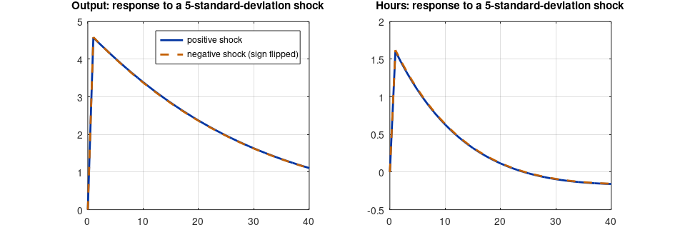

Step 1The question and why first order is not enough
How costly are business cycles, and does uncertainty change how the economy behaves on average? In a first-order solution, the mean of every variable equals its steady state, whatever the size of the shocks: households behave as if they were certain about the future (certainty equivalence). That makes first-order solutions unable to measure:
- precautionary behaviour: uncertainty raising saving and the capital stock;
- welfare: the average utility loss from fluctuations, which depends on variances, a second-order term;
- asymmetry: large positive and negative shocks having responses of different size.
The model is the RBC model of the first guide with one extra equation, a recursive definition of lifetime utility:
Pruning
Higher-order perturbation solutions can explode in simulations, because the squared terms feed back on themselves. Pruning (Kim, Kim, Schaumburg and Sims 2008; Andreasen, Fernández-Villaverde and Rubio-Ramírez 2018) removes the terms of higher order than the approximation, keeping simulations stable and making theoretical moments available. Always use it at order 2 and above.
Step 2Write the model in Dynare
// RBC model with a welfare recursion, solved at second (or third) order with pruning: dynare rbc2 -DORD=3
@#ifndef ORD
@#define ORD = 2
@#endif
var y c i k h a W;
varexo e;
parameters beta alpha delta phi psi rho sigma_e h_ss;
beta = 0.99; alpha = 0.33; delta = 0.025; phi = 1; rho = 0.95; sigma_e = 0.007; h_ss = 1/3;
model;
exp(-c) = beta * exp(-c(+1)) * (alpha * exp(y(+1) - k) + 1 - delta);
psi * exp(phi*h) * exp(c) = (1 - alpha) * exp(y - h);
exp(y) = exp(a) * exp(alpha*k(-1)) * exp((1 - alpha)*h);
exp(k) = (1 - delta) * exp(k(-1)) + exp(i);
exp(y) = exp(c) + exp(i);
a = rho * a(-1) + e;
W = c - psi * exp((1 + phi)*h) / (1 + phi) + beta * W(+1); // lifetime utility (log C = c)
end;
steady_state_model;
r = 1/beta - 1 + delta;
k_h = (alpha / r)^(1/(1 - alpha));
h = log(h_ss); k = log(k_h * h_ss); y = log(k_h^alpha * h_ss);
i = log(delta * exp(k)); c = log(exp(y) - exp(i));
psi = (1 - alpha) * exp(y) / h_ss / (h_ss^phi * exp(c));
a = 0;
W = (c - psi * h_ss^(1 + phi) / (1 + phi)) / (1 - beta);
end;
shocks;
var e; stderr sigma_e;
end;
steady;
check;
stoch_simul(order = @{ORD}, pruning, irf = 0, periods = 0) y c k h W;dynare rbc2
STEADY-STATE RESULTS:
y 0.00509623
c -0.26283
i -1.44292
k 2.24596
h -1.09861
a 0
W -70.0759
EIGENVALUES:
Modulus Real Imaginary
0.95 0.95 0
0.9531 0.9531 0
1.01 1.01 0
1.06 1.06 0
5.548e+17 -5.548e+17 0
There are 3 eigenvalue(s) larger than 1 in modulus for 3 forward-looking variable(s)
The rank condition is verified.
MODEL SUMMARY
Number of variables: 7
Number of stochastic shocks: 1
Number of state variables: 2
Number of jumpers: 3
Number of static variables: 2
MATRIX OF COVARIANCE OF EXOGENOUS SHOCKS
Variables e
e 0.000049How to read it
The policy functions now contain a constant correction and terms in squared states. The constant (the ghs2 term in Dynare's notation) is how risk enters: it shifts every variable away from its steady state even when no shock occurs in a given period. The theoretical moments below are computed from the pruned second-order solution.
Step 3Precautionary saving and the welfare cost of fluctuations
names = cellstr(M_.endo_names);
id = @(v) find(strcmp(names, v));
beta_ = M_.params(strcmp(cellstr(M_.param_names), 'beta'));
mean2 = oo_.mean; ss = oo_.dr.ys; % pruned second-order means of the listed variables (y c k h W) and the steady state
lv = {'y', 'c', 'k', 'h'};
fprintf('%-4s %12s %14s %14s\n', '', 'steady state', 'mean (order 2)', 'difference (%)');
for j = 1:4
fprintf('%-4s %12.4f %14.4f %14.3f\n', lv{j}, ss(id(lv{j})), mean2(j), 100*(mean2(j) - ss(id(lv{j}))));
end
dW = mean2(5) - ss(id('W'));
lambda = 1 - exp((1 - beta_) * dW);
fprintf('\nWelfare: steady state %.4f, mean %.4f\n', ss(id('W')), mean2(5));
fprintf('Welfare cost of fluctuations: %.4f%% of consumption every period\n', 100*lambda);steady state mean (order 2) difference (%) y 0.0051 0.0052 0.009 c -0.2628 -0.2626 0.024 k 2.2460 2.2464 0.043 h -1.0986 -1.0987 -0.008 Welfare: steady state -70.0759, mean -70.0500 Welfare cost of fluctuations: -0.0259% of consumption every period
How to read it
- Precautionary saving. With uncertainty, the average capital stock is above its steady state: households save more as insurance against bad productivity draws. Output is higher on average as a result. A first-order solution would show zero difference for every variable.
- Welfare cost. The consumption-equivalent cost \(\lambda\) solves \(E[\mathcal W] = \mathcal W_{ss} + \ln(1-\lambda)/(1-\beta)\): the share of consumption households would give up every period to live in the steady state instead of the fluctuating economy. Here it is negative, about −0.03%: households are slightly better off with fluctuations. That is not a bug. With elastic labour supply and capital, households can work and invest more when productivity is high and less when it is low, and that option is worth more than the utility lost to consumption volatility (Cho, Cooley and Kim 2015). Lucas (1987) found the cost of fluctuations to be tiny in an endowment economy; in this production economy it is tiny and of the opposite sign. Models with incomplete markets, unemployment risk or nominal rigidities typically produce positive and larger costs.
Step 4How the answer changes with the size of shocks
s0 = M_.params(strcmp(cellstr(M_.param_names), 'sigma_e'));
fprintf('%-22s %16s %16s\n', '', 'mean k - ss (%)', 'welfare cost (%)');
for scale = [0.5 1 2 3]
M_.Sigma_e = (scale * s0)^2; options_.noprint = true;
[info, oo_, options_] = stoch_simul(M_, options_, oo_, {'y', 'c', 'k', 'h', 'W'}); % theoretical pruned moments
m = oo_.mean;
fprintf('%-22s %16.4f %16.4f\n', sprintf('shock sd x %.1f', scale), 100*(m(3) - ss(id('k'))), 100*(1 - exp((1 - beta_)*(m(5) - ss(id('W'))))));
end
M_.Sigma_e = s0^2;mean k - ss (%) welfare cost (%) shock sd x 0.5 0.0108 -0.0065 shock sd x 1.0 0.0430 -0.0259 shock sd x 2.0 0.1720 -0.1037 shock sd x 3.0 0.3871 -0.2334
How to read it
- Size of shocks. Doubling the shock standard deviation multiplies the precautionary capital and the welfare effect by four, tripling it by nine: both are proportional to the variance of the shocks, the signature of a second-order effect.
- Third order. The model file can be solved at third order with
dynare rbc2 -DORD=3. With symmetric shocks, third-order terms leave average outcomes essentially unchanged; they matter for time-varying risk premia and models with stochastic volatility. Dynare provides theoretical moments only up to second order, so third-order results come from long pruned simulations.
Step 5Asymmetric responses to large shocks
clear functions; evalc('dynare rbc2 noclearall nograph nolog -DORD=2');
T = 40; big = 5 * s0;
base = simult_(M_, options_, oo_.dr.ys, oo_.dr, zeros(T, 1), 2);
up = simult_(M_, options_, oo_.dr.ys, oo_.dr, [big; zeros(T-1, 1)], 2);
down = simult_(M_, options_, oo_.dr.ys, oo_.dr, [-big; zeros(T-1, 1)], 2);
f = figure('position', [0 0 860 300]);
vv = {'y', 'h'}; tt = {'Output', 'Hours'};
for j = 1:2
subplot(1, 2, j);
plot(0:T, 100*(up(id(vv{j}), :) - base(id(vv{j}), :))); hold on;
plot(0:T, -100*(down(id(vv{j}), :) - base(id(vv{j}), :)), '--');
title([tt{j} ': response to a 5-standard-deviation shock']); grid on; xlim([0 T]);
if j == 1, legend('positive shock', 'negative shock (sign flipped)'); end
end
print(f, '-dpng', '-r110', 'asym.png');
fprintf('Peak output response: positive %.2f%%, negative %.2f%% (sign flipped)\n', 100*max(up(id('y'), :) - base(id('y'), :)), -100*min(down(id('y'), :) - base(id('y'), :)));Peak output response: positive 4.58%, negative 4.59% (sign flipped)

How to read it
With a linear solution the two lines would coincide exactly. At second order the squared terms add the same correction to positive and negative shocks, so their responses can differ in size. In this smooth RBC model the difference is virtually nil, even for a five-standard-deviation shock: the model is close to linear around its steady state. Strong asymmetries need strong nonlinearities, such as the occasionally binding constraint of the zero-lower-bound guide.
Step 6Write the paper
How to write it: results
We solve the model with a second-order perturbation and pruning, which captures the effect of uncertainty on average outcomes. Productivity risk raises the average capital stock above its deterministic steady state, reflecting precautionary saving. The welfare effect of business-cycle fluctuations, measured as the permanent percentage of consumption that would make households indifferent between the stochastic economy and its deterministic steady state, is very small and slightly favourable: with elastic labour supply, households exploit productivity fluctuations by working and investing more in good times. Both effects scale with the variance of the shocks.
Common mistakes
- Computing welfare from a first-order solution. The linear approximation of a utility function gets welfare comparisons wrong; use second order.
- Simulating at order 2 or 3 without pruning.
- Comparing welfare across policies without a common starting point: conditional and unconditional welfare can rank policies differently.
- Reporting means from a first-order solution as “effects of uncertainty”: they equal the steady state by construction.